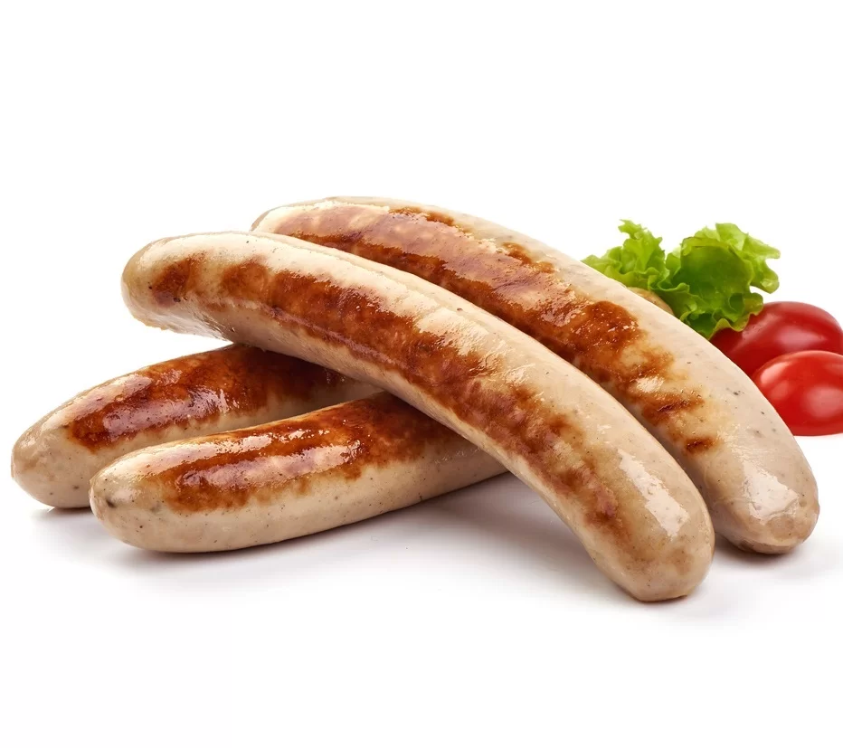

IVEKOVI KLOBASI

DOĐI DO SVOJE ŽELJENE MASE KUPI I JEDI IVEKOVE KLOBASE

Mi smo Dante Rašperger, Florijan Gotal i Bruno Miklin, mladi entuzijasti i ljubitelji klobasa, koji se zajedno udružili s ciljem promoviranja kvalitetnih "Ivekovih Klobasa" diljem svijeta putem naše web stranice. Kao strastveni poznavatelji HTML-a i CSS-a, posvetili smo se stvaranju jedinstvenog online iskustva za sve ljubitelje klobasa. Naša stranica je rezultat naše predanosti i znanja, te se trudimo pružiti informacije o "Ivekovim Klobasama" na najatraktivniji i najinformativniji način. Naša vizija je proširiti ljubav prema kvalitetnim klobasama diljem svijeta. Želimo da svatko ima priliku istražiti raznolike okuse, tradiciju i kvalitetu koje "Ivekove Klobase" pružaju. Naša stranica donosi sveobuhvatne informacije o našim proizvodima, procesu proizvodnje, povijesti i pričama iza svake klobase. Svaki detalj naše web stranice pažljivo je osmišljen kako bismo stvorili ugodno korisničko iskustvo. Od dizajna do korisničke interakcije, nastojimo pružiti jedinstveno iskustvo koje će korisnicima omogućiti da istraže našu ponudu klobasa i pronađu svoje omiljene okuse. Nadamo se da ćete uživati u istraživanju naše web stranice i da ćete se pridružiti zajednici ljubitelja "Ivekovih Klobasa". Ako imate bilo kakva pitanja ili povratne informacije, slobodno nas kontaktirajte. Hvala vam što podržavate našu strast i dopuštate nam da podijelimo ljubav prema vrhunskim klobasama s vama.